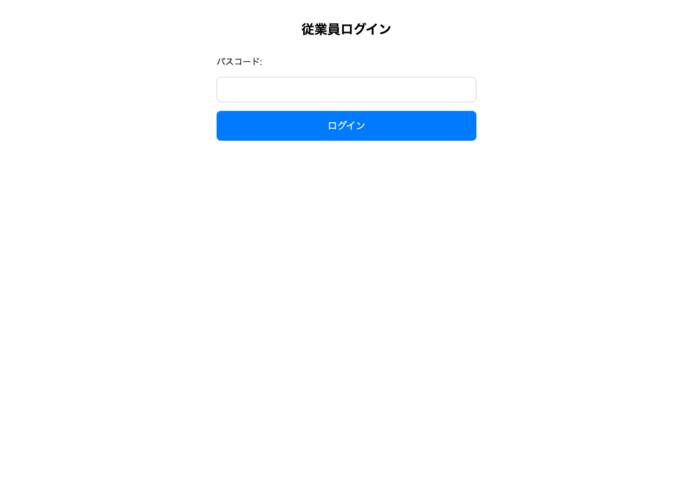
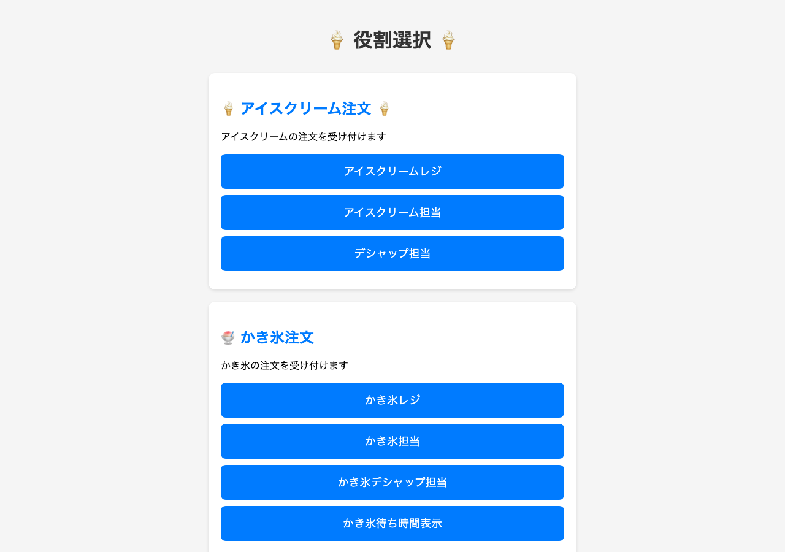
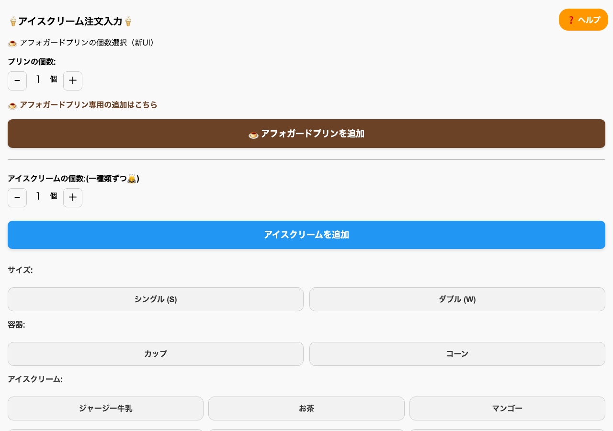
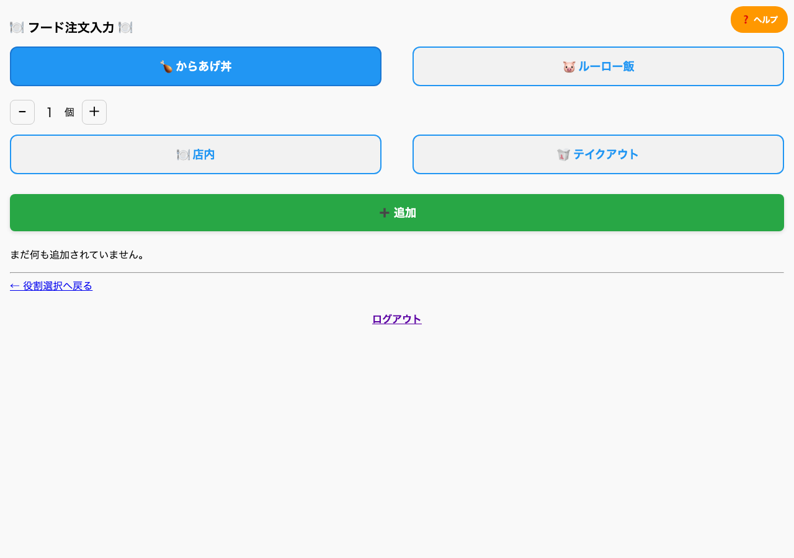
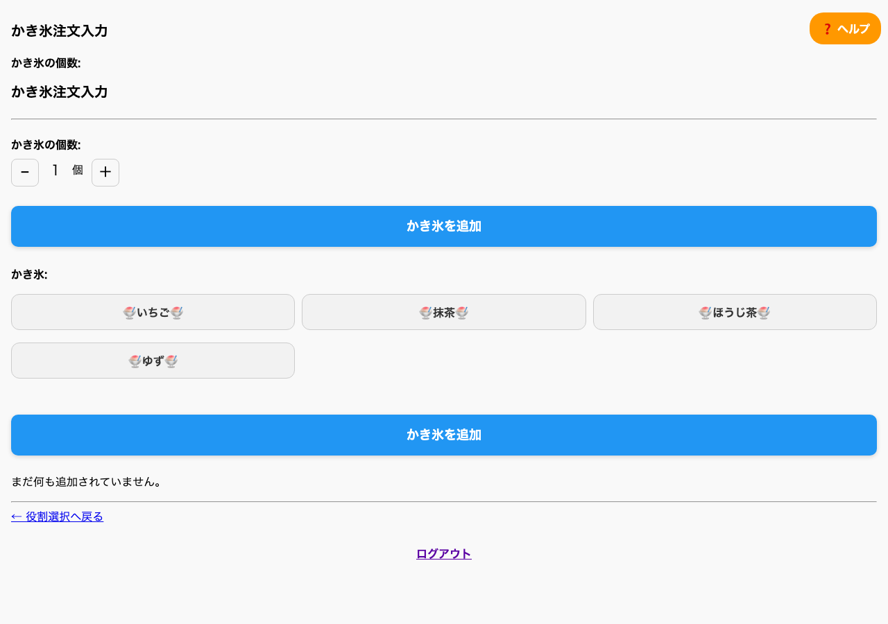
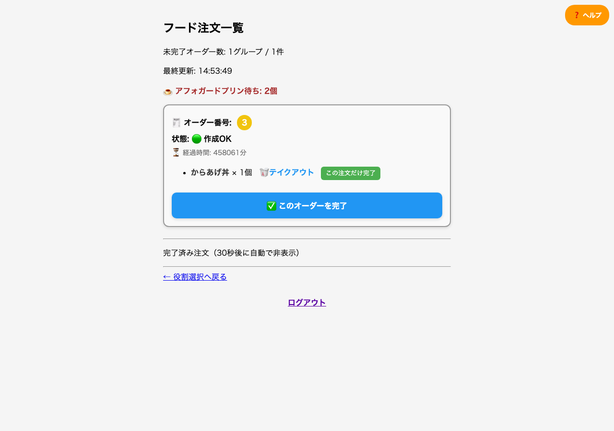
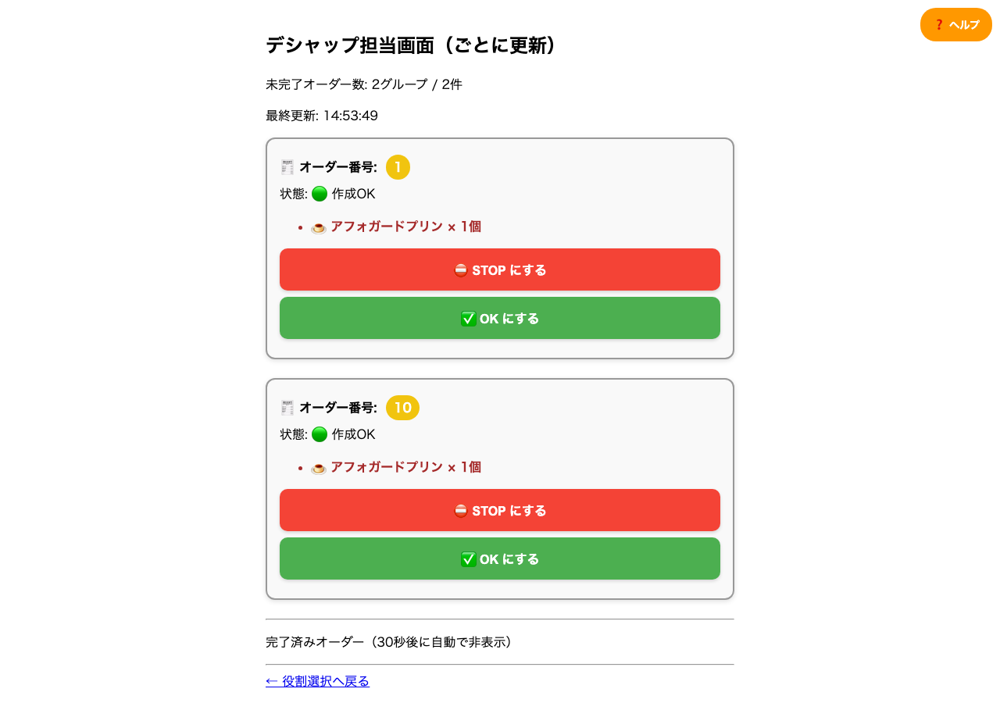
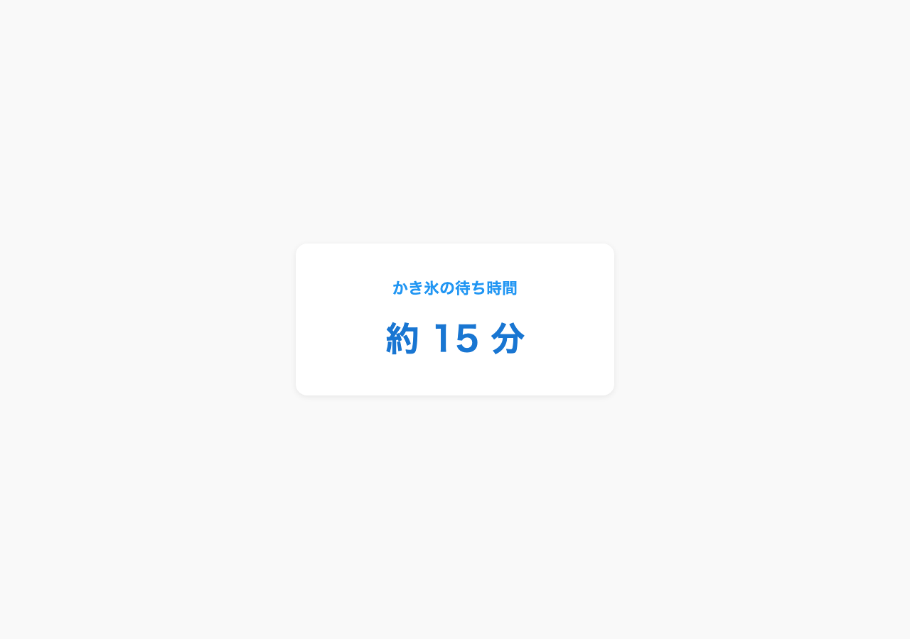

1. プロジェクト概要
cafe&meal MUJI の店舗業務を効率化する注文管理Webアプリケーションです。
フード・アイスクリーム・かき氷の注文を一元管理し、レジ・キッチン・各担当者がリアルタイムに注文状況を共有できるシステムを開発しました。企画・設計・実装・クラウドデプロイまで一貫して担当しています。
フード・アイスクリーム・かき氷の注文を一元管理し、レジ・キッチン・各担当者がリアルタイムに注文状況を共有できるシステムを開発しました。企画・設計・実装・クラウドデプロイまで一貫して担当しています。
2. 開発背景
解決したい課題
- 紙や口頭での注文伝達による伝達ミス
- 商品カテゴリごとに管理方法が異なる運用負担
- 繁忙時の注文進捗の共有の難しさ
アプローチ
- 役割ごとに最適化した専用画面の設計
- クリップ色・番号による現場の運用ルールへの準拠
- Render.com へのデプロイによる複数端末からの同時利用
3. システム構成
┌─────────────────────────────────────────────────────────┐ │ cafeMuji 注文管理システム │ ├─────────────┬─────────────┬─────────────┬───────────────┤ │ フード管理 │ アイス管理 │ かき氷管理 │ REST API │ │ (food) │ (ice) │ (shavedice) │ (api) │ ├─────────────┴─────────────┴─────────────┴───────────────┤ │ Django 5.2 + SQLite / PostgreSQL │ ├─────────────────────────────────────────────────────────┤ │ Render.com（クラウドホスティング） │ └─────────────────────────────────────────────────────────┘
| 役割 | 画面 | 機能 |
|---|---|---|
| レジ担当 | 注文登録画面 | メニュー選択、仮注文→本注文、クリップ設定 |
| キッチン担当 | キッチン画面 | 受注一覧の確認、調理中・完了の更新 |
| アイス担当 | 注文・詳細画面 | フレーバー選択、OK/STOP/保留の状態管理 |
| かき氷担当 | 注文・待ち時間画面 | 注文受付、待ち時間の表示・案内 |
4. 画面イメージ








5. 主な機能
フード注文管理
- からあげ丼、ルーロー飯
- 仮注文 → 本注文の2段階ワークフロー
- 受注 → 作成中 → 完了の追跡
アイスクリーム注文管理
- 12種類のフレーバー
- シングル/ダブル、カップ/コーン
- OK / STOP / 保留の状態制御
かき氷注文管理
- 抹茶・いちご・ゆず
- キッチン画面での進捗管理
- 待ち時間表示
共通機能
- セッションによる仮注文の一時保存
- クリップ色・番号による注文識別
- 完了時刻の自動記録、備考欄
6. 技術スタック
| 区分 | 技術 |
|---|---|
| 言語 | Python 3.13 |
| フレームワーク | Django 5.2 |
| API | Django REST Framework 3.14 |
| データベース | SQLite（開発）/ PostgreSQL（本番） |
| フロントエンド | Django Templates + カスタムCSS |
| デプロイ | Render.com + gunicorn |
| バージョン管理 | Git / GitHub |
7. 開発における工夫
- 現場の運用に寄り添ったUI設計 — スタッフの作業フローをヒアリングし、役割別画面を設計。クリップ管理や仮注文など現場の運用ルールをそのままデジタル化
- 部分更新によるリアルタイム性 — キッチン画面で変更箇所のみを更新し、繁忙時でも作業が中断されないよう配慮
- 設計から運用まで一貫した開発 — DB設計、REST API、デプロイ・運用マニュアルまで整備
8. 開発成果
- 3カテゴリ（フード・アイス・かき氷）の注文を1つのシステムに統合
- REST API エンドポイントの整備（外部連携・将来拡張の基盤）
- 技術資料・運用マニュアルの整備
- Render.com への本番デプロイと運用